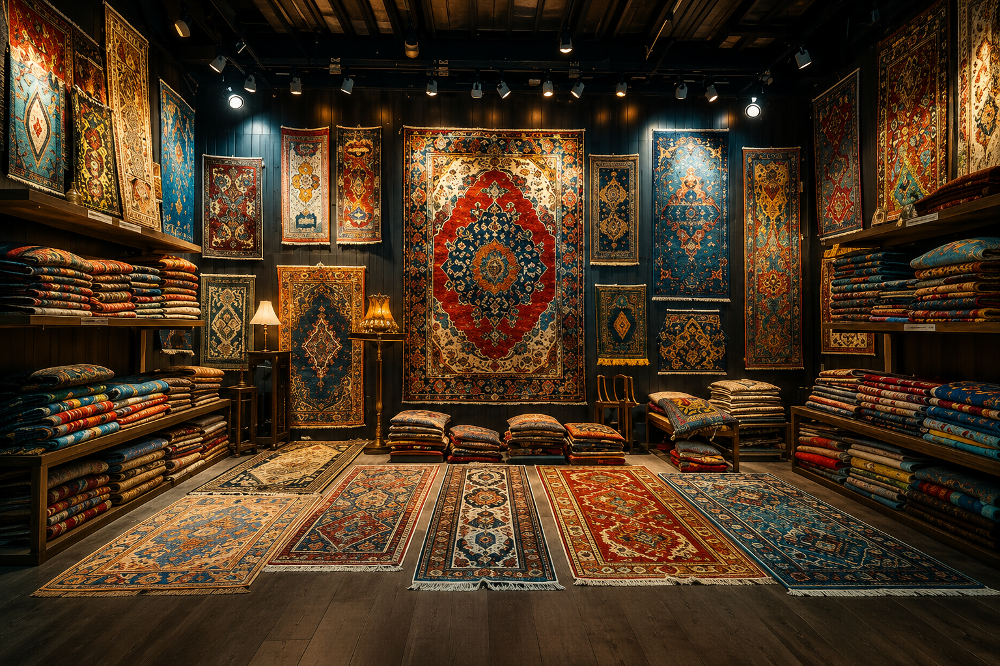

Saudi Arabia's premier destination for handmade and bespoke carpets — curated for palaces, hotels, and the most distinguished homes across the Kingdom and the GCC.
Every showroom, every commission, and every bespoke atelier we've opened traces back to a single loom in Jeddah. Select a milestone to read its story.
Eight collections, each rooted in a distinct weaving tradition — from the medallions of Isfahan to flooring engineered for a five-star lobby.
A single Heritage carpet can take a master weaver eight months to a year to complete — tying, by hand, more knots than most looms will ever count.
We source silk from Fars province, wool sheared at altitude for its tight, lanolin-rich fiber, and dyes drawn from madder root, indigo, and pomegranate skin — the same palette weavers have used for centuries.
Knot density, the true measure of a carpet's fineness, is counted in knots per square inch. The finer the knot, the more detail a weaver can render — and the longer the piece takes to complete.
From first consultation to installation, the bespoke journey is guided by a Heritage design consultant at every stage.
Carpet tiles, broadloom, and bespoke commissions for hospitality, government, and corporate projects across the Kingdom.
A selection of residential, hospitality, commercial, and royal commissions completed by our design and installation teams.
Step into a Heritage showroom to feel the weight and texture of a handmade carpet in person, and speak with a design consultant.
Tap a map to open directions in Google Maps. Our consultants are on hand during showroom hours.
Commission a carpet as individual as the space it will live in.
Start a Consultationالوجهة الأولى في المملكة العربية السعودية للسجاد اليدوي والمصمم خصيصًا — منتقى بعناية للقصور والفنادق وأرقى المنازل في أنحاء المملكة ودول الخليج.
كل صالة عرض، وكل طلب تفصيل، وكل أطلييه حصري افتتحناه يعود أصله إلى نول واحد في جدة. اختر محطة زمنية لتقرأ قصتها.
ثماني مجموعات، لكل منها جذور في تقليد نسج مختلف — من ميداليات أصفهان إلى أرضيات مصممة لبهو فندق خمس نجوم.
قد تستغرق سجادة واحدة من التراث ما بين ثمانية أشهر وعام كامل لإتمامها على يد حائك ماهر، يعقد بيده عقدًا يفوق عدده ما قد يحصيه أي نول آلي.
نستقدم الحرير من إقليم فارس، والصوف المجزوز من المرتفعات لكثافة أليافه الغنية بمادة اللانولين، والأصباغ المستخلصة من جذور الفوّة والنيلة وقشور الرمان — الألوان ذاتها التي اعتمدها الحاكة منذ قرون.
تُعد كثافة العقد، المقياس الحقيقي لدقة السجادة، بعدد العقد في كل بوصة مربعة. فكلما دقّت العقدة، ازدادت التفاصيل التي يمكن للحائك تجسيدها — وطال الوقت اللازم لإتمام القطعة.
من الاستشارة الأولى وحتى التركيب، يرافقكم مستشار تصميم من التراث في كل مرحلة من رحلة التصميم الحصري.
بلاط سجاد، وسجاد عريض، وتصاميم حصرية لمشاريع الضيافة والقطاع الحكومي والشركات في أنحاء المملكة.
مجموعة مختارة من المشاريع السكنية والفندقية والتجارية والملكية التي أنجزتها فرق التصميم والتركيب لدينا.
ادخل إحدى صالات عرض التراث لتشعر بوزن وملمس السجاد اليدوي عن قرب، وتتحدث مع أحد مستشاري التصميم لدينا.
اضغط على الخريطة لفتح الاتجاهات في خرائط جوجل. مستشارونا في خدمتكم خلال ساعات العمل.